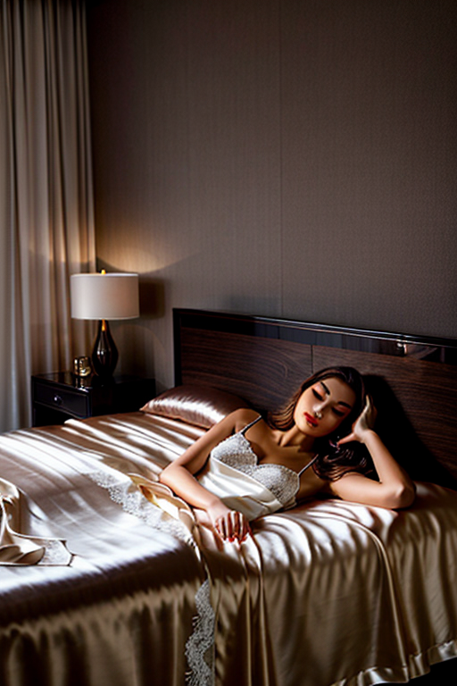

This set explores bedroom girl softcore through natural aesthetics and romantic tone under backlight. Compositions use leading lines with minimal set, keeping focus clear and tidy. Details like sporty styling and balanced colors make browsing easy.
Browse bedroom images. Page 6 of curated bedroom-style portrait collection.

Here we highlight page6, aiming for clean structure, quick scanning, and useful context. Alt text and headings are optimized to make the content accessible and to provide consistent cues across the site. Subtle differences in wording help avoid duplication across similar pages. Alt text and headings are optimized to make the content accessible and to provide consistent cues across the site. Subtle differences in wording help avoid duplication across similar pages. Bookmark the page if it’s useful; updates aim to improve clarity, speed, and overall structure over time. Internal navigation leads to related items with comparable tone or composition. This reduces bounce and supports exploration within the same theme. For more context, browse related entries linked nearby; each page offers a slightly different angle to limit overlap.